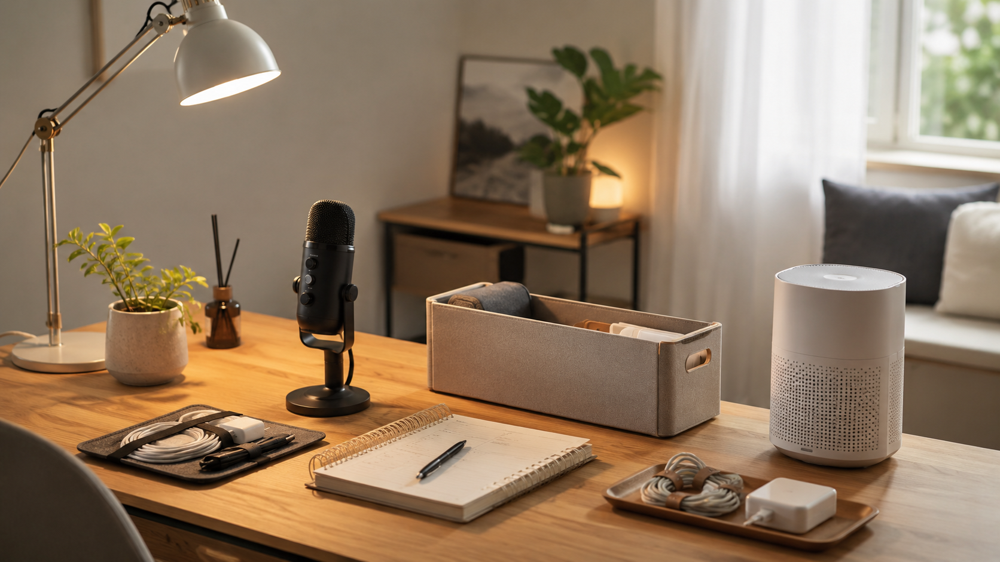

퇴근 후 부업 장비 우선순위 비교

부업을 시작할 때 가장 많이 하는 실수는 한 번에 많이 사는 것입니다. 이 글은 퇴근 후 1시간 기준으로 실제로 체감이 큰 장비부터 우선순위를 나누어 정리합니다.
핵심 정리
이 글은 단순 추천이 아니라, 왜 이 주제가 요즘 관심을 받는지와 실제 사용 관점에서 무엇을 먼저 바꾸면 좋은지 정리한 글입니다.
추천 우선순위
- 지금 가장 불편한 문제와 직접 연결되는지 확인
- 매일 반복해서 사용할 가능성이 높은지 확인
- 이미 가진 것과 조합해서 바로 실행 가능한지 확인
왜 지금 이 주제가 뜨는가
- 크리에이터·부업 수요가 늘면서 “최소 장비로 시작하기”에 대한 관심이 커졌습니다.
- 경기 불확실성과 본업 병행 상황에서 가성비와 지속 가능성이 더 중요해졌습니다.
- 쇼츠·블로그·쿠팡 제휴 등 다양한 진입 방식이 늘어나며 공통 장비 수요가 생기고 있습니다.
실사용 관점 리뷰
실사용 관점에서 가장 먼저 체감되는 것은 조명과 작업 공간 안정화입니다. 화면이 잘 보이고 오래 앉아도 덜 피곤해야 콘텐츠 제작이 이어집니다.
반면 처음부터 마이크, 조명, 삼각대, 소품을 모두 사면 실제로는 세팅이 번거로워 시작 자체가 늦어질 수 있습니다. 초기에는 작업 개시를 쉽게 만드는 도구가 더 중요합니다.
비교해서 보면 좋은 포인트
| 구분 | 우선 확인할 점 | 추천 방향 |
|---|---|---|
| 1순위 | 책상 조명·타이머·거치대 | 바로 앉아 시작하게 만드는 도구 |
| 2순위 | 마이크·기본 수납 | 콘텐츠 품질과 정리 효율 보강 |
| 3순위 | 보조 장비·배경 소품 | 루틴이 자리 잡은 뒤 확장 |
사지 않아도 되는 경우
- 아직 어떤 부업을 할지 정하지 않은 경우
- 작업 시간보다 장비 구경 시간이 더 길어지는 경우
- 보관 위치가 없어 책상만 복잡해지는 경우
쇼츠 연결 아이디어
- “부업 시작할 때 꼭 필요한 것 3개만” 정리 영상
- 장비를 많이 사는 사람 vs 먼저 시작하는 사람 비교 영상
- 퇴근 후 작업존 세팅 30초 루틴 영상
관련 글 연결
구매 전 비교 박스
아직 실제 쿠팡파트너스 링크는 연결하지 않았습니다. 먼저 문제 해결 기준을 확인하고, 이후 검증된 상품군만 연결하는 구조입니다.
이 영역은 제휴 링크가 추가될 수 있으며, 구매 시 운영자가 일정액의 수수료를 받을 수 있습니다. 단, 구매 전에는 본인의 공간·예산·사용 빈도를 먼저 확인하는 것을 권장합니다.
이 페이지는 제휴 링크를 포함할 수 있으며, 실제 구매 전에는 본인의 공간·예산·사용 빈도를 먼저 확인하는 것을 권장합니다.
다음 행동 선택
바로 구매를 유도하기보다, 내 상황에 맞는 글을 더 읽고 필요한 항목만 비교하는 흐름을 추천합니다.